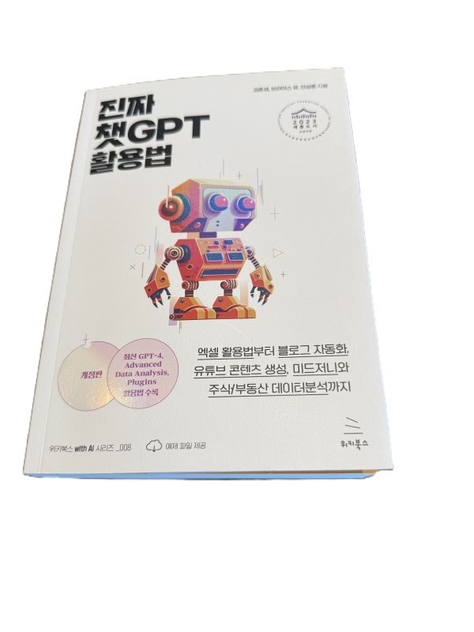

진짜 챗GPT 활용법

저자: 김준성, 브라이스 유, 안상준
발행일: 2023년
이 책은 챗GPT의 기본 구조와 작동 원리부터 블로그, 유튜브, 엑셀 자동화, 데이터 분석, API 활용까지 다양한 사례를 소개한다. 다만 2023년에 쓰였기 때문에 지금(2025년) 기준으로는 기능과 환경이 많이 달라져 있다. 그럼에도 불구하고 챗GPT를 단순한 대화형 도구가 아닌 실제 업무와 창작의 파트너로 바라볼 수 있게 해주는 점은 여전히 유효하다.
GPT의 구조와 원리
책은 먼저 GPT가 트랜스포머(Transformer) 구조 위에서 만들어졌다고 설명한다. 트랜스포머의 핵심은 어텐션 메커니즘인데, 이는 문장의 단어들이 서로 어떤 관계를 가지는지를 한 번에 파악하는 방식이다. 덕분에 GPT는 긴 문맥도 잘 이해할 수 있다.
트랜스포머는 인코더와 디코더 구조로 나뉜다. 인코더는 입력된 문장을 이해해 의미를 벡터로 바꾸고, 디코더는 그 의미를 바탕으로 새로운 문장을 생성한다. 번역 모델의 경우 인코더가 한국어를 이해하고 디코더가 영어 문장을 만들어내는 식이다. GPT는 이 중 디코더 구조만을 사용해 입력된 문맥을 기반으로 다음 단어를 예측한다.
이어서 인컨텍스트 러닝에 대한 설명도 나온다. 이는 GPT가 대화 중 앞에서 주어진 맥락을 활용해 마치 학습한 것처럼 답변하는 현상이다. 실제로 모델이 새로 학습되는 것은 아니고, 이전 대화 내용을 문맥으로 삼아 답변을 만들어내는 것이다. (현재는 GPTs와 메모리 기능이 추가되어 제한적으로 장기 기억도 가능해졌다.)
또 하나 강조하는 부분은 지식의 한계다. 당시 GPT는 학습 시점까지의 데이터만 알고 있어 최신 정보에는 약했다. (지금은 웹 검색 기능이 내장되어 실시간 정보 확인이 가능해졌기 때문에, 이 부분은 크게 개선된 차이점이다.)
마지막으로 할루시네이션 문제를 언급한다. GPT는 사실이 아닌 내용을 그럴듯하게 만들어낼 수 있는데, 이는 모델이 ‘사고’하는 것이 아니라 단어 패턴을 예측하는 방식으로 작동하기 때문이다. (2025년 현재는 많이 개선되었지만, 여전히 검증하는 태도가 필요하다.)
비교와 평가
비슷한 시기에 출간된 오현석 저자의 《개발자를 위한 챗GPT 활용법》은 개발자의 시선에서 GPT를 설명하며, 코드 작성·디버깅·API 활용 같은 프로그래밍 실무 중심에 초점이 맞추어져 있다. 반면 이 책은 블로그, 유튜브, 엑셀 등 비개발자도 쉽게 따라 할 수 있는 실용 사례를 폭넓게 다룬다. 개발자라면 전자가 더 직접적인 도움이 되고, 다양한 분야의 활용 아이디어를 찾는 경우에는 이 책이 더 적합하다.